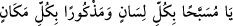

Kurbağa: “Ağzımda su var.” dedi.
Ağzında su bulunan kişi konuşabilir mi?”
Süfyan şöyle demiştir: Kurbağadan daha çok Allah’ı zikreden bir canlı olmadığı
söylenir.
Zemahşerî de şöyle demiştir: Kurbağa ses çıkarırken: (Sübhanel-Meliki’l-Kuddûs)
diye zikreder.
Rivayete göre Davud (a.s.): “Bu gece Allah’ı öyle tesbih edeceğim ki, mahlûkatından
hiçbiri O’nu böyle tesbih etmemiş olacak.” dedi. Evinin kenarındaki derede bulunan bir
kurbağa ona şöyle seslendi: “Ey Davud, tesbihinle Allah’a karşı iftihar mı ediyorsun?
Yetmiş yıldır dilim Allah’ı zikirden bir an geri kalmamıştır. Hele bir on gecem var ki o
gecelerde iki cümle zikirle meşgul olduğum için ne bir yiyecek tattım, ne de bir yudum
su içtim.” Davud (a.s.), o iki cümlenin ne olduğunu sorunca kurbağa dedi ki: Bunlar, “” “Yâ müsebbehan bi-külli lisanin ve mezkûran bikülli
mekanin” (Ey her lisan ile tesbih edilen ve her mekanda zikredilen!) cümleleridir.
Bunun üzerine Davud (a.s.) kendi kendine: “Herhalde ben bundan daha üstün olamam.”
dedi.
Enes (r.a.)’den şöyle rivayet edilmiştir: “Kurbağaları öldürmeyiniz. Çünkü o
İbrahim (a.s.)’ın yakılması için hazırlanan ateşi görünce ağzı ile su taşıyarak onu
söndürmeye çalışmıştır.” [77]
İbn Sînâ der ki: Herhangi bir sene içerisinde kurbağalar çoğalır ve normalin üstünde
artarsa hemen ardından vebâ salgını vuku bulur.
Rivayete göre Firavun ve kavminin üzerine şiddetli bir karanlık içinde sekiz gün
aralıksız yağmur yağdı. Hiç kimse evinden çıkamadı. Evlerine su dolup boğazlarına
kadar dayandı. Kıptîlerin evleriyle iç içe olmasına rağmen İsrailoğulları’nın evlerine
bir damla dahi su gelmedi. Su Kıbtîlerin arazilerine yayılıp oralarını göl haline getirdi.
Onları ziraat ve diğer tasarruflardan alıkoydu. Bu böylece yedi gün devam etti. Mûsâ
(a.s.)’a gelip: “Rabb’ine dua et, bu belayı üzerimizden kaldırsın. O zaman sana
inanacağız.” dediler. Mûsâ (a.s.) dua etti ve bela üzerlerinden kalktı. Görülmemiş bir
şekilde yeniden otlar ve nebatlar bitip çıkıverdi. Onlar: “İşte bizim temenni ettiğimiz
şey buydu. Bela gibi sandığımız su, bize bir nimet ve bolluk vesilesi oldu. Yemin ederiz
ki ey Mûsâ, sana inanmıyoruz.” dediler. Böylece sözlerinde durmadılar ve bir ay daha
küfürleri üzere yaşadılar.
Sonra Allah Teâlâ onlara çekirgeleri musallat etti. Çekirgeler bir arşın yüksekliğinde